vignettes/articles/calculating-time-on-task.Rmd
calculating-time-on-task.RmdThe learning analytics practitioner will often find it useful to have at their disposal a measure of how much time a student or other participant in a pedagogical process has spent interacting with an activity, course or another specific area. While millisecond precision measurements are unlikely absent the context of a controlled experimental design, we can probably convince ourselves that we can estimate time-on-task or dwelltime, by analyzing log-data, even if these data were created for a different purpose.
One way of estimating dwelltime \(\hat{d}\) is:
\[ \hat{d} = \sum_{i=1}^{|X|} \begin{cases} x_i-x_{i-1},& \text{if } x_i-x_{i-1}\text{ }\leq \theta\\ 0, & \text{otherwise} \end{cases} \]
Where:
When users interact with Moodle they need to log in or otherwise start a session. While they are actively browsing the site they will create log-entries, however, we cannot guarantee that they log out –in fact our experience tells us that they do not. We therefore need to determine how to deal with the last click, and the path of least resistance is to discard this particular observation. Other options include imputing the data-point from the researchers favorite measure of central tendency.
Let’s start by loading the moodleR package:
We will also be depending on dplyr verbs so:
my_log <- mdl_log()
colnames(my_log)
#> [1] "id" "eventname" "component"
#> [4] "action" "target" "objecttable"
#> [7] "objectid" "crud" "edulevel"
#> [10] "contextid" "contextlevel" "contextinstanceid"
#> [13] "userid" "courseid" "relateduserid"
#> [16] "anonymous" "other" "timecreated"
#> [19] "origin" "ip" "realuserid"We see that we have a ’timecreatedcolumn anduserid` which can use to estimate dwelltime.
First let’s get a random user:
my_user_id <- mdl_log() %>%
head(1000L) %>%
slice_sample(n = 1) %>%
pull(userid)And implement with dplyr verbs:
Thus far we have implemented the algorithm without a \(\theta\). This will very likely yield distorted values because it includes differences that span several sessions and time intervals which can be years. Let’s take a look at the distribution to ascertain a reasonable value for our \(theta\). For this we will use the ggplot2 package.
library(ggplot2)
density_plot <-
dwelltime_estimate %>%
ggplot(aes(dwelltime)) +
geom_density()+
scale_x_log10(labels = scales::label_number_si())
density_plot
We see a flattening occurring around 1000. Perhaps we can round this to 1200 (which corresponds to 20 minutes) for good measure:
density_plot +
geom_vline(xintercept = 1200, lty=2, color="blue")+
annotate(geom = 'text', x = 300, y = .4,
label = "theta == 1200",
parse = TRUE, color = 'blue',cex=5)
So,
my_theta <- 1200
dwelltime_estimate %>%
filter(dwelltime <=my_theta) %>%
summarize(total_dwelltime = sum(dwelltime, na.rm = TRUE))
#> # Source: lazy query [?? x 1]
#> # Database: sqlite 3.33.0 [/home/sasha/chi2/moodleR/mdl_cache/mdl_cache.sqlite]
#> total_dwelltime
#> <int>
#> 1 27079And human readable:
dwelltime_estimate %>%
filter(dwelltime <=my_theta) %>%
summarize(total_dwelltime = sum(dwelltime, na.rm = TRUE)) %>%
pull(total_dwelltime) %>%
prettyunits::pretty_sec(compact = TRUE)
#> [1] "~7h"It may be of use for the learning analytics researcher to now how the dwelltime is distributed over time. This can be accomplished by converting the timecreated column to a date-object using the anytime package.
dwelltime_estimate <- dwelltime_estimate %>%
filter(dwelltime <= my_theta) %>%
collect() %>% # Since we're using non-dplyr verbs we need to collect
mutate(date = anytime::anydate(.data$timecreated)) %>%
group_by(date) %>%
summarize(
dwelltime = sum(dwelltime, na.rm = TRUE)
)
dwelltime_estimate %>%
ggplot(aes(x = date, y = dwelltime)) +
geom_line()+
scale_y_continuous(labels = prettyunits::pretty_sec, breaks = 1800*1:10)
Alternatively we can summarize by week using e.g. lubridate:
dwelltime_estimate %>%
mutate(Week = lubridate::week(date)) %>%
group_by(Week) %>%
summarize(
dwelltime = sum(dwelltime, na.rm = TRUE)
) %>%
ggplot(aes(x = Week, y = dwelltime))+
geom_line() +
scale_y_continuous(labels = prettyunits::pretty_sec, breaks = c(1800*1:15))+
scale_x_continuous( breaks = seq(0,53, by=5) )